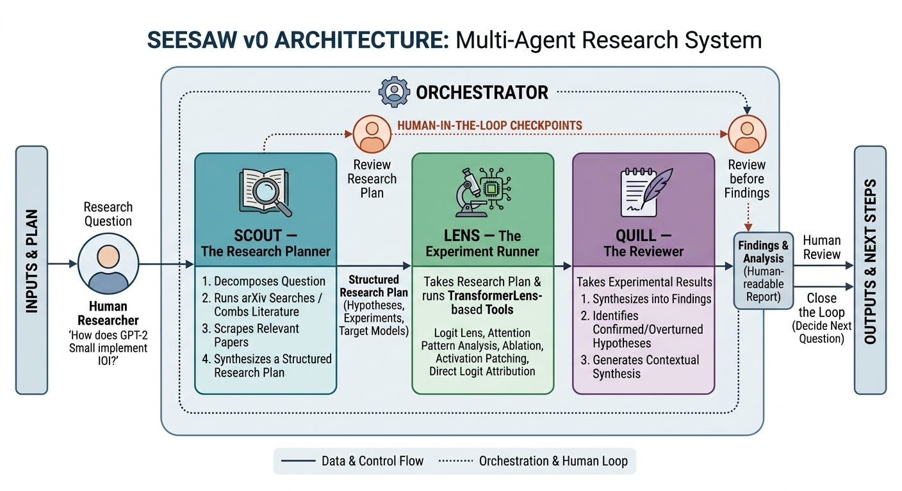
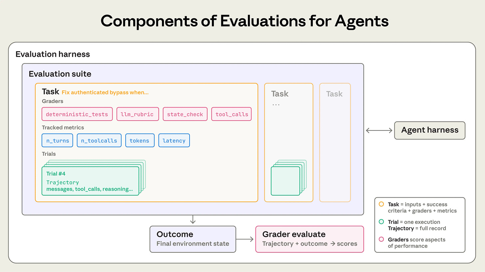
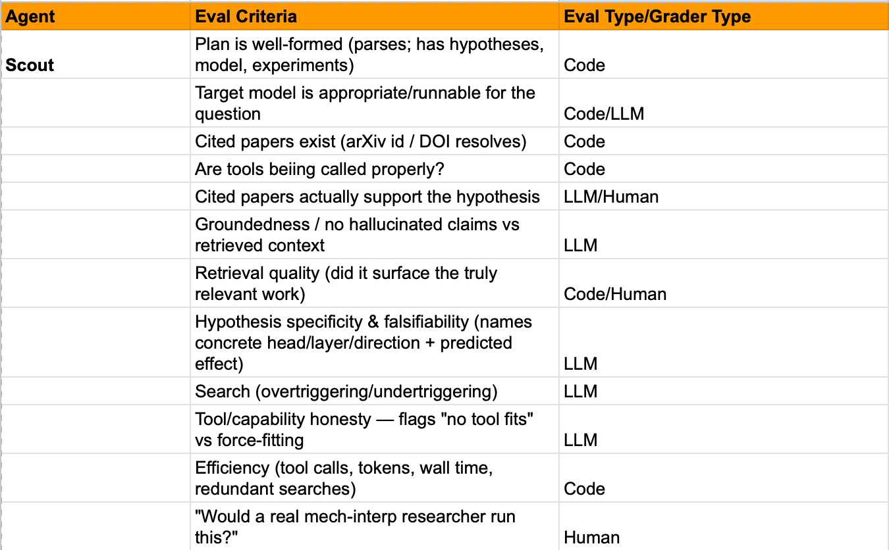
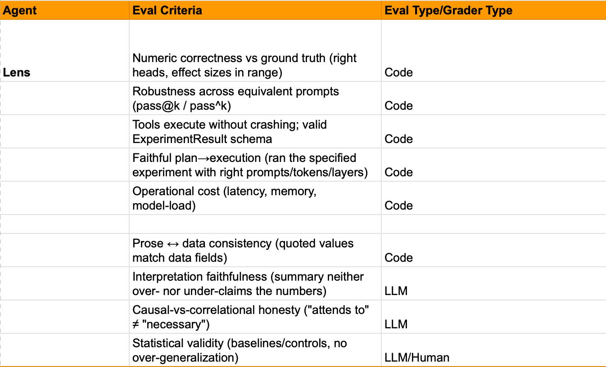
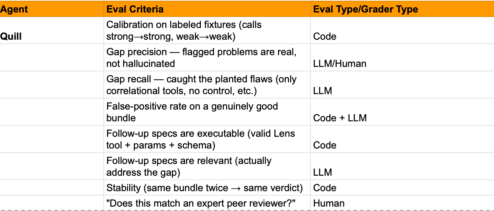

Part 6 of Building Seesaw: Agentic AI for AI Safety Research
Building Seesaw: Agentic AI to do AI Safety Research, Part 6
Troubleshooting and validation pipeline for the agentic system
If you’re new to this series, welcome!
In this series, I document the building of Seesaw, which is a multi-agent system for mechanistic interpretability research and its core architecture powered by 3 unique agents: Scout, Lens, and Quill. Scout plans the research. Lens runs it. Quill reviews and critiques it. You can see the Github repository here.
As of this post, the full system is working - a version zero with a basic UI. This post is a detailed discussion of designing and setting up an agentic evaluation pipeline: one for each agent, and one for the system at large.

Agentic evaluation is a non-trivial task. LLM evaluation is already complex as you have to deal with the uncertainties of a single autoregressive model but an agentic setup/multi-agent setup adds cascading errors on top. In order to get started with evals, I highly recommend you to read this blog by Anthropic. This blog will also serve as the primary resource for the rest of this blogpost.
Preliminaries
An eval is just a test for an AI system: give it an input, apply grading logic to its output, measure success. A task is a single test, defined inputs plus success criteria. One attempt at a task is a trial, and because agents are non-deterministic, one trial rarely tells you much. The complete record of a trial: outputs, tool calls, reasoning, intermediate results is the transcript (or trace), and the final state of the world after the agent finishes is the outcome.

The grader is the logic that scores a trial, and this is where the most useful distinction in the post lives. Graders come in three complementary flavors:
Code-based graders: deterministic rules: string matches, unit tests, tool-call verification. Fast, objective, reproducible but also brittle, and only usable where a right answer can be checked mechanically.
Model-based graders (LLM-as-judge): a model applies a rubric or natural-language assertion. Flexible and nuanced where no single right answer exists but non-deterministic, and, as we’ll see, a judge you haven’t calibrated is just a second opinion you’ve chosen to trust blindly.
Human graders: expert review. The gold standard, and far too expensive to run on everything, which is why the other two exist.
Two more distinctions matter. First, outcome vs. process evaluation: grade what the agent produced, not the exact sequence of steps it took because rigid step-checking penalizes valid alternative approaches. Second, the pair of reliability metrics: pass@k is the probability the agent succeeds at least once in k attempts, while pass^k is the probability it succeeds every time. They answer different questions, and conflating them flatters your agent. The blog also describes an 8-step process for good eval design which I urge you to read about and we will also revisit later in the post.
Definition of Agent Evaluation Criteria
Before defining any evals, I would like to take a step back and start to define the input and output surface of every agent and the criteria that each agent needs to function successfully
Scout
It is an agent responsible for generating plans given a research question/prompt. So, after a bit of brainstorming on paper and then with Claude/Grok/GPT, this is the criteria that I came up with:

Note that while writing the criteria, I categorise them into Code/LLM/Human grader roughly for implementation purposes.
Lens
Repeating the same process of Lens that I did for Scout, this is the evaluation criteria. The main difference between Scout and Lens is that since Lens is an experiment runner and interpreter, there need to be more checks for accurate execution, tool-calling etc.

Quill
Quill’s evaluation criteria is quite confusing of all the agents since it produces a critique. There’s no ground truth paper to check Quill’s opinions against, because Quill’s job is to have opinions about Lens’s output. What you’re actually testing is calibration: does Quill call a strong result strong and a weak result weak, the way a domain expert would? That’s a completely different question from “is this factually correct.” Anyway here’s a set of criteria that could be useful:

Structure of the eval set
Following is the structure of the evaluation set that I’ve envisioned for version 0 of Seesaw. Regarding source data, the tasks and graders were designed around eight published mechanistic interpretability papers with known, checkable findings such as IOI, gender bias, greater-than, ROME, induction heads, successor heads, copy suppression, and the docstring circuit plus seven adversarial probes built to test judgment where no ground truth exists.
eval/
├── graders/ — the 29 grading functions, one file per agent
│ ├── scout.py
│ ├── lens.py
│ ├── quill.py
│ └── base.py — shared types every grader returns
├── fixtures/ — canned inputs + expected verdicts, to test the graders themselves
│ ├── scout_fixtures.yaml
│ ├── lens_fixtures.yaml
│ ├── quill_fixtures.yaml
│ └── loader.py
├── tasks/ — the 15 YAML task specs (8 ground-truth papers + 7 adversarial probes)
│ ├── ioi_circuit.yaml
│ ├── gender_bias.yaml
│ ├── scout_tool_bias_sae.yaml
│ ├── quill_weak_bundle.yaml
│ ├── ...
│ └── loader.py
├── rubrics/ — markdown rubrics the LLM judge reads for the fuzzier criteria
│ ├── hypothesis_specificity.md
│ ├── causal_honesty.md
│ └── ...
└── runner/ — actually runs a task against the live agents and dispatches the gradersLayer 1: graders (eval/graders/): This directory consists of 29 grading functions, one set per agent. Each one takes an artifact: a plan, a Lens result or a Quill critique and returns pass/fail plus a reason.
Layer 2: fixtures (eval/fixtures/): This part is slightly different and surfaced as a part of the brainstorming. This grades the graders. Each fixture is a simple test case: feed a grader something that should obviously pass, feed it something that should obviously fail, check it lands where it should. 56 of these, one pass and one fail case per grader. 30 don’t need an API key, so I actually ran them and 30/30 came back clean. The other 26 need the LLM judge or a network call.
Layer 3: tasks (eval/tasks/): 15 YAML files: the 8 ground-truth papers, plus 7 questions designed to break things (tool-bias traps for Scout, a strong/weak bundle pair for Quill, a causal-language trap for Lens). Each task says what “done” looks like was a plan saved, was the right tool actually called, not just a similar one. All 15 load without errors.
The runner (eval/runner/) is what actually runs a task against the live agents and checks it against the graders.
One honest gap: eight of the tasks need test files that don’t exist yet. The runner flags this as an error instead of pretending those tasks passed. You can view the evaluation code draft here.
Implementation and Observability
The eval set that exists currently was implemented using PyTest and Langchain for simple code graders and fixtures followed by Langsmith for observability. LangSmith traces every Scout and Quill evaluation run automatically once you’re calling evaluate(): full tool-call history, token counts, latency, per-evaluator scores captured without extra instrumentation.
Conclusion
One thing I realised during this exercise of eval design is that is incredibly hard! Part of why it’s hard is that “evaluate an agent” isn’t one problem, it’s three different problems wearing the same name: checking a number against a paper, judging whether a hypothesis is any good, and calibrating an opinion that has no right answer to begin with. I didn’t fully appreciate that going in, and a chunk of this draft is me discovering it the slow way, by building the wrong-shaped thing first and then rebuilding it.
The layered structure : graders, then fixtures that test the graders, then tasks that use both, is the version I’ve landed on for now, but I don’t think it’s the last version. The fixtures idea specifically came from realizing I had no way to know if a grader was actually any good, which is an embarrassing thing to notice after you’ve already built a dozen graders. I expect more gaps like that to show up the more I actually run this instead of just building it.
So I’m treating this as active work, not a conclusion. Some of what’s here will probably look wrong to me in a month. But, I’d rather publish the rough version and refine it in public than sit on it until it feels done, because that’s the purpose of this series. The next post, will be about putting the v0 into production to come full circle before starting to work on the next iteration (i.e examining every detail of the system, laying emphasis on it’s performance on interpretability). Stay tuned!
Originally published on Mind & AI on Substack.